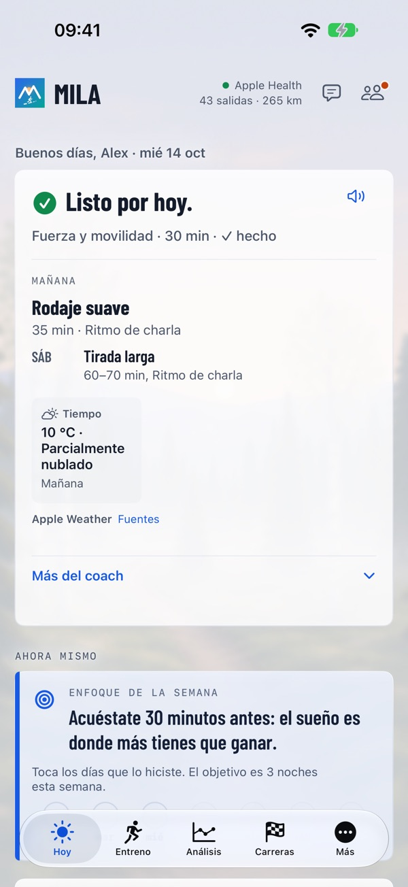
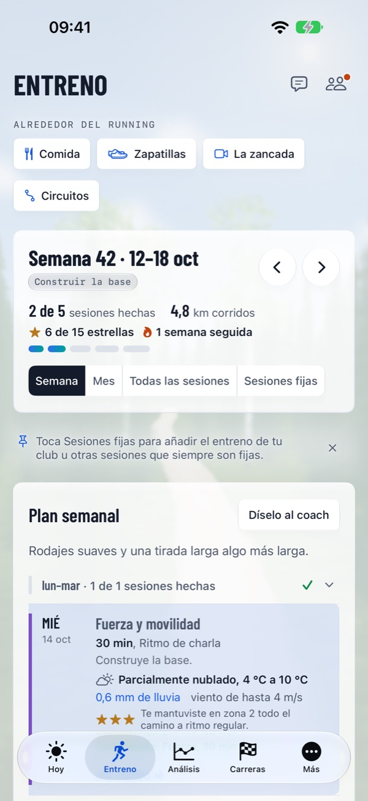
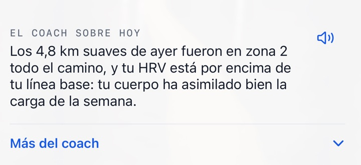

La sesión justa. El día justo.
Un coach que lee tu cuerpo y tu vida cada mañana – hasta la meta.
Mila parte de tus propios datos, tu forma de hoy y tu objetivo. Cada mañana llega primero la valoración del coach – listo, día normal o tómatelo con calma – y después la sesión de hoy tal como está ahora: un entreno que encaja en tu vida, te hace más fuerte de cara a tu objetivo y nunca te pide descifrar ni un solo gráfico.



Más del entreno, menos quebraderos de cabeza
La sesión justa cada día – según cómo te encuentres y cómo sea tu día a día.
Por qué Mila es diferente
Tu reloj mide. Mila lo convierte en la sesión justa para ti.
La esencia de Mila
La sesión justa. El día justo. Todo en Mila parte de ahí.
Un coach a un toque
Cada mañana recibes la valoración del coach y la sesión de hoy, el mejor momento para correr y qué ponerte según el tiempo. La nota del día te la puede leer en voz alta. Cuando tu vida cambia, díselo al coach con tus palabras, y cuando te surja una duda, pregunta al coach – las respuestas conocen tus datos. Al acabar la semana – el domingo por la noche o, como muy tarde, el lunes por la mañana – llegan el resumen semanal y el plan de la semana siguiente.

Mila en la muñeca
La app de Mila en el Apple Watch muestra tu día, graba tu carrera y te pregunta qué tal la sesión. Los demás relojes funcionan mediante Apple Health.
Todo lo que necesita un corredor
De la primera salida suave al día de la carrera.
Plan semanal y análisis
Un plan semanal con programas de fuerza y sesiones que puedes mover. Después de correr, plan frente a lo hecho, la ruta coloreada por ritmo y salidas parecidas. Tus patrones, Comparado con, Récords a lo largo del tiempo y Mi año corriendo.
Calendario de carreras de Mila
Carreras oficiales con mapa, perfil de altitud, avituallamientos y enlace al organizador – o sube tú mismo el recorrido (GPX, KML, TCX o ZIP). Cada carrera del calendario tiene también su propia página: milacoach.app/es/carreras.
Antes y después de la carrera
Pronóstico, plan de ritmo según el perfil de altitud, plan de avituallamiento, ¿Estoy listo?, guía de la carrera y mañana de carrera. Después, parciales por kilómetro frente al plan, el análisis de carrera del coach y tu resultado oficial.
La zancada
Graba en la app o elige un vídeo. Solo se envían imágenes fijas, con las caras difuminadas, y el vídeo nunca sale de tu iPhone. El coach te da observaciones y ejercicios, los integra en tu plan y les hace seguimiento.
Zapatillas
El coach calcula cuánto te dura cada par – más o menos cuántos kilómetros y semanas a tu ritmo. Importa tu lista de zapatillas desde una foto o un archivo CSV.
Comida
Haz una foto o describe una comida, y el coach la estima y la relaciona con tu entreno. Corrígela con tus palabras, muéstrala sin números o regístrala con Siri.
Compartir
Imágenes de salidas y carreras con un fondo al estilo de Mila según el lugar, un texto sugerido y una frase del coach.
En tu calendario
Las sesiones del coach en el calendario que elijas, a la hora con mejor tiempo.
En marcha en pocos minutos
Háblale al coach de ti y de tu objetivo, mira cómo te ha entendido y recibe tu primera semana. Prueba Mila Coach gratis durante una semana.
Funciona con tu reloj
Mila lee tus salidas desde Apple Health, así que no necesitas un reloj concreto.
Tus datos siguen siendo tuyos
Los datos de Apple Health se leen en tu iPhone; un resumen llega al coach, tras tu consentimiento, junto con lo que conectes o envíes (un servicio de reloj conectado, fotos de comidas, imágenes de tu lista de zapatillas, imágenes fijas de vídeos de tu zancada). Tu cuenta se guarda en la UE (Irlanda). Los textos del coach los escribe un servicio de IA externo en EE. UU. conforme a las cláusulas contractuales tipo de la UE. Mila nunca vende tus datos ni los usa para publicidad, y puedes eliminar tu cuenta con todo lo que contiene cuando quieras. Mila ofrece consejos generales de entrenamiento, no consejo médico.